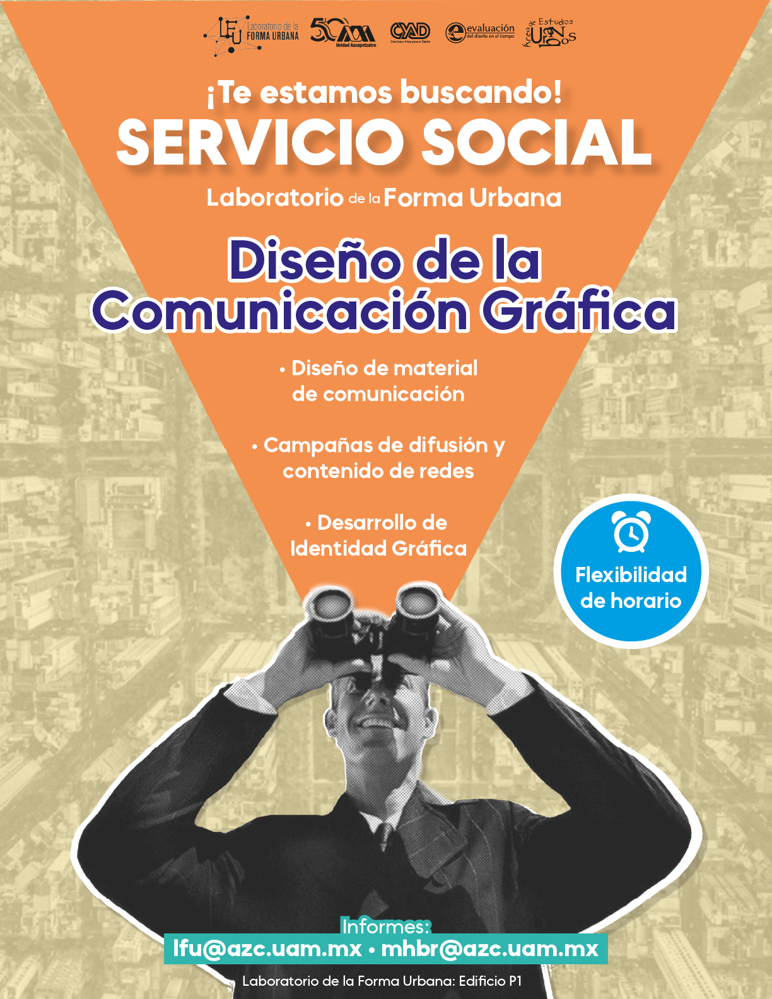

<link rel="stylesheet" href="css/Estilos_Formacion.css" />

<section id="Formacion" class="contenido-investigacion">
  <h2>Formación y Capacitación</h2>

  <p>
    El Laboratorio de Estudios Urbanos fomenta la formación continua de profesorado y estudiantado a través de cursos extracurriculares especializados. Estas actividades, centradas en cartografía temática, análisis espacial, representación de datos y metodologías críticas, fortalecen las habilidades analíticas y técnicas del capital humano. La capacitación en herramientas avanzadas y enfoques innovadores potencia la investigación y la docencia, preparando a la comunidad académica para los desafíos territoriales contemporáneos.
  </p>
</section>

<section id="ProximosCursos" class="contenido-investigacion">
  <h3>Cursos y Talleres Próximos</h3>

  <table class="tabla-cursos">
    <thead>
      <tr>
        <th>Curso</th>
        <th>Fecha</th>
        <th>Lugar</th>
      </tr>
    </thead>
    <tbody>
      <tr>
        <td>Curso 1</td>
        <td>05/10/2025</td>
        <td>Ciudad A</td>
      </tr>
      <tr>
        <td>Curso 2</td>
        <td>12/10/2025</td>
        <td>Ciudad B</td>
      </tr>
      <tr>
        <td>Curso 3</td>
        <td>20/10/2025</td>
        <td>Ciudad C</td>
      </tr>
    </tbody>
  </table>
</section>

<section id="OfertaCursos" class="contenido-investigacion">
  <h3>Oferta de Cursos y Talleres</h3>

  <p>La oferta de cursos y talleres busca fortalecer las habilidades y capacidades en las siguientes temáticas:</p>

  <h4>Cursos de SIG Intermedio y Avanzado para la Planeación Urbana y el Ordenamiento Territorial</h4>
  <p>
    Estos cursos permiten dominar el análisis espacial multicriterio para la selección de sitios, la evaluación de riesgos urbanos y la optimización de infraestructura. Los asistentes adquirirán habilidades en la gestión de bases de datos geoespaciales y la creación de modelos determinísticos y predictivos.
  </p>

  <h4>Talleres para el Análisis de Imágenes Satelitales</h4>
  <p>
    Los participantes aprenderán los principios básicos de la percepción remota para interpretar imágenes satelitales y aéreas en el estudio del crecimiento urbano, la detección de cambios en el uso del suelo y la evaluación del impacto ambiental. Esta habilidad es esencial para el monitoreo y la planeación sostenible del territorio.
  </p>

  <h4>Cursos de Cartografía Temática y Automatizada</h4>
  <p>
    Enfocados en el análisis de datos espaciales —como datos de movilidad, demográficos, económicos y sociales— para identificar patrones territoriales y desigualdades socioespaciales. Estas competencias son clave para la investigación en la intersección entre tecnología, economía y política urbana.
  </p>

  <h4>Cursos y talleres de formación impartidos</h4>
  <ul>
    <li>Curso para la elaboración de cartografía temática y herramientas de análisis espacial (15 al 25 de mayo de 2025).</li>
    <li>Curso especializado para edición de datos y representación cartográfica (28 de octubre al 7 de noviembre de 2024).</li>
    <li>Curso Contramapeo: Proyecto de cartografía crítica con perspectiva de género (7 y 8 de octubre de 2024).</li>
    <li>Taller: Introducción al Método de Análisis Jerárquico aplicado al territorio (22 de agosto de 2024).</li>
    <li>Curso básico sobre construcción de cartografía (27 de septiembre al 27 de octubre de 2023).</li>
  </ul>
</section>

<section id="ServicioSocial" class="contenido-investigacion">
  <h3>Servicio Social</h3>

  <h4>Proyectos registrados</h4>
  <p>
    Diseño e implementación del Sistema para la consulta de Información Geográfica del Laboratorio de la Forma Urbana. Aprobado con la clave de aprobación 674/2I y ACAD001912.
  </p>

  <div class="servicio-social">
    <div class="imagen"></div>
    <div class="imagen"></div>
  </div>
</section>
